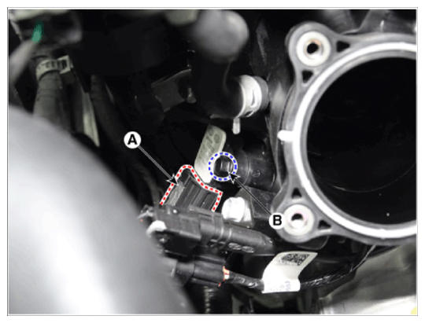

Repair Procedures: Removal
WARNING: This page is about a different variant/trim than selected.
- Turn ignition switch OFF and disconnect the negative (-) battery cable.
- Disconnect the manifold absolute pressure sensor connector (A).
- Remove the mounting bolt (B), and then remove the sensor from the surge tank.
Tightening Torque:
6.9 - 8.8 N.m (0.7 - 0.9 kgf.m, 5.1 - 6.5 lb.ft)
 Courtesy of HYUNDAI MOTOR AMERICA
|